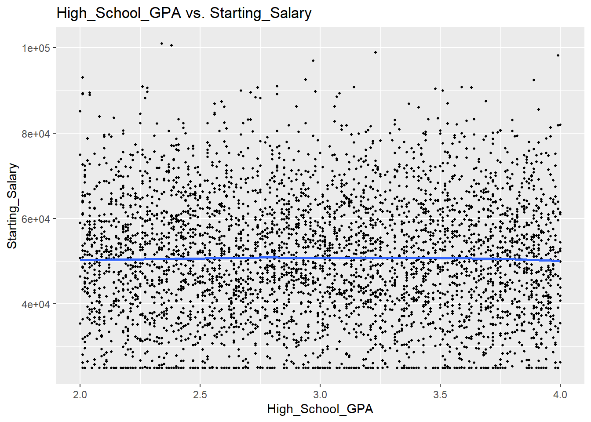
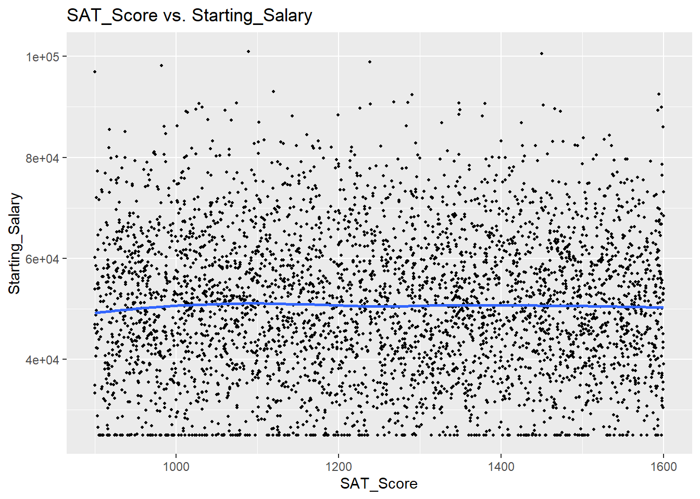
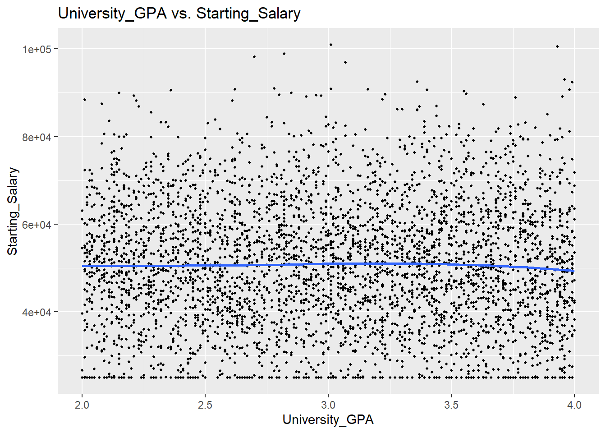
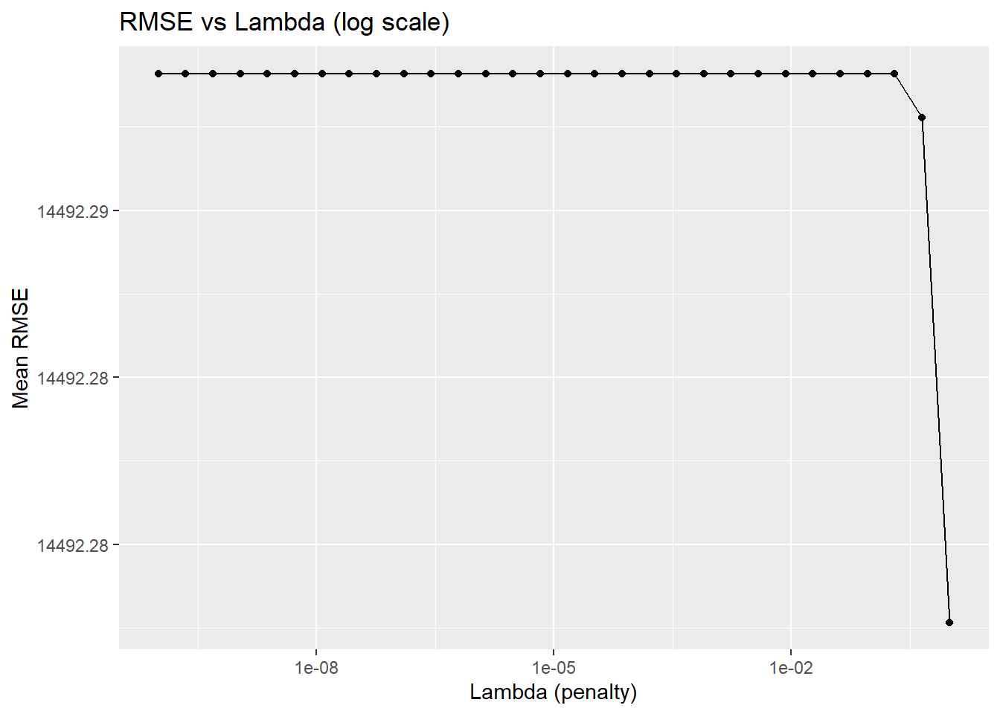

library(here)
library(readr)
library(dplyr)
library(ggplot2)
library(rsample)
library(recipes)
library(parsnip)
library(workflows)
library(tune)
library(yardstick)
library(glmnet)
library(dials)
library(naniar)
library(softImpute)My Final Project
Motivation and Context
This problem is particularly relevant to me because it provides an opportunity to explore the intersection of education and career outcomes, which is a key concern for many students, educators, and professionals alike. The factors that influence starting salaries after graduation have real-world implications, not only for students trying to plan their educational path but also for policymakers and educational institutions looking to improve the career prospects of graduates. Therefore, analyzing the relationship between academic performance and salary outcomes can show how education translates into financial success and helps both individuals and institutions make more informed choices.
This problem is also relevant to prospective students deciding which high school or university to attend, as well as universities and educators aiming to align their curricula with career success factors. Employers and recruiters may also find this analysis interesting, as it could offer insights into the predictive value of academic performance when hiring new graduates. In addition, this research could help policymakers and educational reformers understand if academic performance is a strong predictor of future earnings, which could inform discussions around education funding and access.
To understand the analysis, it is important to have some background in basic educational and career metrics. The concept of academic performance generally refers to measurable outcomes like a student’s GPA (Grade Point Average), which reflects their grades and overall academic success. A high school GPA is an indicator of a student’s performance in secondary education, while a university GPA reflects academic success at the collegiate level. The SAT score is a standardized test score widely used in the U.S. to assess a student’s readiness for college. These metrics are often seen as foundational indicators of a student’s academic ability and can influence admission to universities and their academic standing once enrolled. Also, starting salary refers to the initial compensation a graduate receives when they enter the workforce. Understanding this requires knowledge of the economic context in which new graduates find themselves, including factors like job market conditions and industry-specific salary ranges. By analyzing these variables, I would like to explore whether higher academic performance correlates with a higher starting salary and whether it can serve as a predictor of financial success post-graduation.
On the other hand, while academic performance is a widely accepted measure of a student’s capabilities, it may not be the sole factor influencing salary outcomes. Other elements such as internships, networking, or soft skills can also play significant roles in career success, and these factors may not always be reflected in academic scores.
Main Objective
This project aims to explore how a student’s academic performance, including high school GPA, SAT score, and university GPA, influences their starting salary after graduation, with the goal of identifying key academic factors that contribute to early career financial success.
Packages Used In This Analysis
| Package | Use |
|---|---|
| here | to easily load and save data |
| readr | to import the CSV file data |
| dplyr | to massage and summarize data |
| rsample | to split data into training and test sets |
| ggplot2 | to create nice-looking and informative graphs |
| recipes | to preprocess data before modeling |
| parsnip | to define and fit machine learning models like linear regression |
| workflows | to combine preprocessing and modeling steps into a single pipeline |
| tune | to tune model parameters using resampling techniques |
| yardstick | to evaluate model performance using metrics like RMSE and R² |
| glmnet | to build regularized regression models (Lasso) for feature selection |
| dials | to define and manage hyperparameters for tuning models |
| naniar | to explore and visualize patterns of missing data |
| softImpute | to impute missing continuous values using matrix completion |
Data Description
The data I am using for this project is from the “Education & Career Success” dataset available on Kaggle, a popular platform for sharing datasets. This dataset was created and updated by Adil Shamim, who designed it to explore the relationship between academic performance and career outcomes, such as starting salary and job offers. The dataset includes 5,000 records and covers variables such as high school GPA, SAT scores, university ranking, internships completed, and starting salary, among others. Although the dataset is synthetic, it was generated using real-world trends and data from education and career success studies. The primary purpose of this dataset is to allow users to conduct exploratory data analysis, create predictive models, and gain insights into factors influencing career success based on education. Particularly, the data is not directly gathered from real students, but is instead simulated based on existing trends to provide an accessible resource for data analysis. Below is the link of the dataset:
Education and Career Success – Kaggle Dataset
education_career_success <- readr::read_csv("education_career_success.csv")Data Limitations
While the “Education & Career Success” dataset offers a valuable resource for analyzing the impact of academic performance on career outcomes, there are several limitations when evaluating conclusions based on this data. One key limitation is that the dataset is synthetic, which means it may not fully reflect the complexities and variations found in real-world data. The data was generated based on existing trends, so it may miss nuances such as regional differences, socioeconomic factors, or the influence of specific industries on career outcomes. Additionally, there could be biases in how certain variables, like GPA or internships, are represented, which may not fully capture the diverse range of experiences students have in their academic or career paths.
Moreover, the dataset only includes a limited set of variables, which means that important factors influencing career success, such as personal networks, family background, or access to opportunities, are not directly measured. The soft_skills_score and networking_score are subjective ratings, which could introduce bias or inconsistencies in the data collection process. Also, the dataset’s focus on a synthetic population means the conclusions drawn may not be fully generalizable to real-world populations. For example, the trends observed may not hold for different time periods, geographic locations, or industries. Finally, the dataset includes a “work-life balance” rating, which may vary significantly between companies or job types but is generalized across the entire dataset. These limitations should be carefully considered when drawing conclusions about the impact of academic performance on career success.
Data Wrangling (Optional Section)
In this analysis, I plan to build a predictive model to explore the relationship between academic performance (such as high school GPA, SAT score, and university GPA) and career outcomes (such as starting salary). Since I am looking to build a model that can generalize to new, unseen data, it is essential to split the data into a training and test set. This will allow me to train the model on one subset of the data and then evaluate its performance on a separate, unseen subset. By doing this, I can assess how well the model generalizes to new data, helping to prevent overfitting (where the model performs well on the training data but poorly on unseen data).
I will use a standard approach for splitting the data, that is 80% of the data will be used for training, and 20% will be used for testing. This approach strikes a balance between having enough data to train the model while leaving enough data for evaluation. The data will be randomly shuffled to ensure that the split is representative of the overall dataset.
set.seed(195)
n <- nrow(education_career_success)
train_indices <- sample(n, size = floor(0.8*n))
ECS_train <- education_career_success[train_indices,]
ECS_test <- education_career_success[-train_indices,]education_career_success |>
miss_var_summary()# A tibble: 20 × 3
variable n_miss pct_miss
<chr> <int> <num>
1 Student_ID 0 0
2 Age 0 0
3 Gender 0 0
4 High_School_GPA 0 0
5 SAT_Score 0 0
6 University_Ranking 0 0
7 University_GPA 0 0
8 Field_of_Study 0 0
9 Internships_Completed 0 0
10 Projects_Completed 0 0
11 Certifications 0 0
12 Soft_Skills_Score 0 0
13 Networking_Score 0 0
14 Job_Offers 0 0
15 Starting_Salary 0 0
16 Career_Satisfaction 0 0
17 Years_to_Promotion 0 0
18 Current_Job_Level 0 0
19 Work_Life_Balance 0 0
20 Entrepreneurship 0 0- The result shows that there is no missing data in the original dataset.
Exploratory Data Analysis
- First, I will check if
Starting_Salaryhas unusual values or not
# Since `Starting_Salary` is described as First job salary in USD ($25,000 - $150,000)
unusual_start_salary <- ECS_train %>% filter(`Starting_Salary` < 25000 | `Starting_Salary` > 150000)
unusual_start_salary# A tibble: 0 × 20
# ℹ 20 variables: Student_ID <chr>, Age <dbl>, Gender <chr>,
# High_School_GPA <dbl>, SAT_Score <dbl>, University_Ranking <dbl>,
# University_GPA <dbl>, Field_of_Study <chr>, Internships_Completed <dbl>,
# Projects_Completed <dbl>, Certifications <dbl>, Soft_Skills_Score <dbl>,
# Networking_Score <dbl>, Job_Offers <dbl>, Starting_Salary <dbl>,
# Career_Satisfaction <dbl>, Years_to_Promotion <dbl>,
# Current_Job_Level <chr>, Work_Life_Balance <dbl>, Entrepreneurship <chr>The result shows that Starting_Salary has no unusual values.
- Then, I will explore the distribution of my response variable,
Starting_Salary
ECS_train |>
summarize(
num_total = n(),
mean = mean(Starting_Salary, na.rm = TRUE),
sd = sd(Starting_Salary, na.rm = TRUE),
min = min(Starting_Salary, na.rm = TRUE),
Q1 = quantile(Starting_Salary, 0.25, na.rm = TRUE),
median = median(Starting_Salary, na.rm = TRUE),
Q3 = quantile(Starting_Salary, 0.75, na.rm = TRUE),
max = max(Starting_Salary, na.rm = TRUE),
IQR = IQR(Starting_Salary, na.rm = TRUE)
)# A tibble: 1 × 9
num_total mean sd min Q1 median Q3 max IQR
<int> <dbl> <dbl> <dbl> <dbl> <dbl> <dbl> <dbl> <dbl>
1 4000 50620. 14482. 25000 40300 50400 60600 101000 20300ggplot(data = ECS_train,
mapping = aes(
x = Starting_Salary
)
) +
geom_histogram(center = 65000, binwidth = 10000) +
labs(title = "Histogram of Starting_Salary", x = "Starting_Salary")
Based on the summary and histogram, the Starting_Salary distribution shows that most graduates earn between \(\$40,000\) and \(\$60,000\), with a few making much higher salaries, up to \(\$101,000\). Since the median is lower than the mean \((\$50,400 < \$50,620)\), the salaries are slightly right-skewed, with more people earning on the lower end of the scale and fewer reaching the high salary levels, indicating that a small number of people have very high-paying jobs.
- Second, I will check if
High_School_GPAhas unusual values or not
# Since `High_School_GPA` is on the scale 2.0 - 4.0
unusual_high_scho_GPA <- ECS_train %>% filter(`High_School_GPA` < 2 | `High_School_GPA` > 4)
unusual_high_scho_GPA# A tibble: 0 × 20
# ℹ 20 variables: Student_ID <chr>, Age <dbl>, Gender <chr>,
# High_School_GPA <dbl>, SAT_Score <dbl>, University_Ranking <dbl>,
# University_GPA <dbl>, Field_of_Study <chr>, Internships_Completed <dbl>,
# Projects_Completed <dbl>, Certifications <dbl>, Soft_Skills_Score <dbl>,
# Networking_Score <dbl>, Job_Offers <dbl>, Starting_Salary <dbl>,
# Career_Satisfaction <dbl>, Years_to_Promotion <dbl>,
# Current_Job_Level <chr>, Work_Life_Balance <dbl>, Entrepreneurship <chr>The result shows that High_School_GPA has no unusual values.
- Then, I will explore the distribution of
High_School_GPA
ECS_train |>
summarize(
num_total = n(),
mean = mean(High_School_GPA, na.rm = TRUE),
sd = sd(High_School_GPA, na.rm = TRUE),
min = min(High_School_GPA, na.rm = TRUE),
Q1 = quantile(High_School_GPA, 0.25, na.rm = TRUE),
median = median(High_School_GPA, na.rm = TRUE),
Q3 = quantile(High_School_GPA, 0.75, na.rm = TRUE),
max = max(High_School_GPA, na.rm = TRUE),
IQR = IQR(High_School_GPA, na.rm = TRUE)
)# A tibble: 1 × 9
num_total mean sd min Q1 median Q3 max IQR
<int> <dbl> <dbl> <dbl> <dbl> <dbl> <dbl> <dbl> <dbl>
1 4000 3.00 0.577 2 2.5 2.99 3.5 4 1ggplot(data = ECS_train,
mapping = aes(
x = High_School_GPA
)
) +
geom_histogram(center = 3, binwidth = 0.1) +
labs(title = "Histogram of High_School_GPA", x = "High_School_GPA")
Based on the summary and histogram, the High_School_GPA distribution is fairly centered around a 3.0 average, with most students scoring between 2.5 and 3.5, indicating a fairly typical “B” to “B+” performance. It is roughly uniform with no extreme outliers. Since the standard deviation is 0.577, the data is fairly consistent with moderate variability.
- Third, I will check if
SAT_Scorehas unusual values or not
# Since `SAT_Score` is described as Standardized test score (900 - 1600)
unusual_SAT_score <- ECS_train %>% filter(`SAT_Score` < 900 | `SAT_Score` > 1600)
unusual_SAT_score# A tibble: 0 × 20
# ℹ 20 variables: Student_ID <chr>, Age <dbl>, Gender <chr>,
# High_School_GPA <dbl>, SAT_Score <dbl>, University_Ranking <dbl>,
# University_GPA <dbl>, Field_of_Study <chr>, Internships_Completed <dbl>,
# Projects_Completed <dbl>, Certifications <dbl>, Soft_Skills_Score <dbl>,
# Networking_Score <dbl>, Job_Offers <dbl>, Starting_Salary <dbl>,
# Career_Satisfaction <dbl>, Years_to_Promotion <dbl>,
# Current_Job_Level <chr>, Work_Life_Balance <dbl>, Entrepreneurship <chr>The result shows that SAT_Score has no unusual values.
- Then, I will explore the distribution of
SAT_Score
ECS_train |>
summarize(
num_total = n(),
mean = mean(SAT_Score, na.rm = TRUE),
sd = sd(SAT_Score, na.rm = TRUE),
min = min(SAT_Score, na.rm = TRUE),
Q1 = quantile(SAT_Score, 0.25, na.rm = TRUE),
median = median(SAT_Score, na.rm = TRUE),
Q3 = quantile(SAT_Score, 0.75, na.rm = TRUE),
max = max(SAT_Score, na.rm = TRUE),
IQR = IQR(SAT_Score, na.rm = TRUE)
)# A tibble: 1 × 9
num_total mean sd min Q1 median Q3 max IQR
<int> <dbl> <dbl> <dbl> <dbl> <dbl> <dbl> <dbl> <dbl>
1 4000 1253. 204. 900 1074 1256 1432 1600 358ggplot(data = ECS_train,
mapping = aes(
x = SAT_Score
)
) +
geom_histogram(center = 1200, binwidth = 50) +
labs(title = "Histogram of SAT_Score", x = "SAT_Score")
Based on the summary and histogram, the SAT scores are fairly evenly spread around an average score of about 1253. There is moderate variability in scores, with most students scoring between 1074 and 1432, and a few students with perfect scores of 1600. The distribution appears balanced and doesn’t have any extreme outliers.
- Finally, I will check if
University_GPAhas unusual values or not
# Since `University_GPA` is on the scale 2.0 - 4.0
unusual_uni_GPA <- ECS_train %>% filter(`University_GPA` < 2 | `University_GPA` > 4)
unusual_uni_GPA# A tibble: 0 × 20
# ℹ 20 variables: Student_ID <chr>, Age <dbl>, Gender <chr>,
# High_School_GPA <dbl>, SAT_Score <dbl>, University_Ranking <dbl>,
# University_GPA <dbl>, Field_of_Study <chr>, Internships_Completed <dbl>,
# Projects_Completed <dbl>, Certifications <dbl>, Soft_Skills_Score <dbl>,
# Networking_Score <dbl>, Job_Offers <dbl>, Starting_Salary <dbl>,
# Career_Satisfaction <dbl>, Years_to_Promotion <dbl>,
# Current_Job_Level <chr>, Work_Life_Balance <dbl>, Entrepreneurship <chr>The result shows that University_GPA has no unusual values.
- Then, I will explore the distribution of
University_GPA
ECS_train |>
summarize(
num_total = n(),
mean = mean(University_GPA, na.rm = TRUE),
sd = sd(University_GPA, na.rm = TRUE),
min = min(University_GPA, na.rm = TRUE),
Q1 = quantile(University_GPA, 0.25, na.rm = TRUE),
median = median(University_GPA, na.rm = TRUE),
Q3 = quantile(University_GPA, 0.75, na.rm = TRUE),
max = max(University_GPA, na.rm = TRUE),
IQR = IQR(University_GPA, na.rm = TRUE)
)# A tibble: 1 × 9
num_total mean sd min Q1 median Q3 max IQR
<int> <dbl> <dbl> <dbl> <dbl> <dbl> <dbl> <dbl> <dbl>
1 4000 3.02 0.574 2 2.52 3.03 3.52 4 1ggplot(data = ECS_train,
mapping = aes(
x = University_GPA
)
) +
geom_histogram(center = 3, binwidth = 0.05) +
labs(title = "Histogram of University_GPA", x = "University_GPA")
Based on the summary and histogram, the University_GPA distribution is fairly uniform, with most students earning GPAs between 2.52 and 3.52, and an average GPA of around 3.02. The distribution is relatively consistent, with no extreme outliers, and the spread is moderate, suggesting most students perform similarly in university.
Investigate the association between the two variables.
First, I will investigate the association between
High_School_GPAandStarting_Salaryby creating a scatterplot to show the relationship between these two variables and see if they have a linear relationship.
ggplot(data = ECS_train,
mapping = aes(
x = High_School_GPA,
y = Starting_Salary
)
) +
geom_point(size = 0.8) +
labs(title = "High_School_GPA vs. Starting_Salary",
x = "High_School_GPA",
y = "Starting_Salary") +
geom_smooth(method = "loess", se = FALSE)`geom_smooth()` using formula = 'y ~ x'
Based on the scatterplot, there appears to be no significant relationship between High_School_GPA and Starting_Salary. The plot does not exhibit any clear trend, and the blue regression line is nearly horizontal, suggesting that High_School_GPA does not have a meaningful effect on Starting_Salary across its range.”
To double check, I calculate the correlation coefficient between two variables.
cor(ECS_train$Starting_Salary, ECS_train$High_School_GPA)[1] 0.002065118We see that the correlation coefficient is very small (0.002), which means that there is no clear relationship between High_School_GPA and Starting_Salary.
- Next, I will investigate the association between
SAT_ScoreandStarting_Salaryby creating a scatterplot to show the relationship between these two variables and see if they have a linear relationship.
ggplot(data = ECS_train,
mapping = aes(
x = SAT_Score,
y = Starting_Salary
)
) +
geom_point(size = 0.8) +
labs(title = "SAT_Score vs. Starting_Salary",
x = "SAT_Score",
y = "Starting_Salary") +
geom_smooth(method = "loess", se = FALSE)`geom_smooth()` using formula = 'y ~ x'
Based on the scatterplot, it looks like there is no relationship between SAT_Score and Starting_Salary because this plot does not show any specific trend, and the blue line seems to be horizontal across different values of SAT_Score.
To double check, I calculate the correlation coefficient between two variables.
cor(ECS_train$Starting_Salary, ECS_train$SAT_Score)[1] 0.0009987774Since the correlation coefficient is close to 0 (0.001), there is no relationship between SAT_Score and Starting Salary.
- Then, I will investigate the association between
University_GPAandStarting_Salaryby creating a scatterplot to show the relationship between these two variables and see if they have a linear relationship.
ggplot(data = ECS_train,
mapping = aes(
x = University_GPA,
y = Starting_Salary
)
) +
geom_point(size = 0.8) +
labs(title = "University_GPA vs. Starting_Salary",
x = "University_GPA",
y = "Starting_Salary") +
geom_smooth(method = "loess", se = FALSE)`geom_smooth()` using formula = 'y ~ x'
Based on the scatterplot, it does not have any detectable trend, and the blue regression line is nearly horizontal. This indicates that University_GPA is not significantly associated with Starting_Salary.
To double check, I calculate the correlation coefficient between two variables.
cor(ECS_train$Starting_Salary, ECS_train$University_GPA)[1] -0.00564282Since the correlation coefficient is close to 0 (-0.01), there is no significant relationship between University_GPA and Starting_Salary.
Through exploratory data analysis, I examined the relationships between starting salary and various academic factors, including high school GPA, SAT score, and university GPA. Surprisingly, the analysis revealed that none of these factors showed a meaningful relationship with starting salary. The correlation coefficients for high school GPA, SAT score, and university GPA were very close to zero, indicating weak or no linear associations with starting salary. Additionally, visual inspections of the data, such as scatterplots and regression lines, showed no discernible trends.
This finding suggests that academic performance, as measured by these variables, may not be strong predictors of early career financial success in this dataset. However, this does not necessarily mean that academic factors are unimportant in determining starting salary in general. Other factors not explored in this analysis, such as internships, networking, or soft skills, may play a more significant role in shaping starting salaries. Further research could investigate these other variables to provide a more comprehensive understanding of the factors influencing early career earnings.
Modeling
I selected linear regression as the primary modeling technique for this analysis because it is a fundamental, interpretable method well-suited for examining the relationship between one or more predictor variables and a continuous response variable, such as Starting_Salary. This approach estimates the effect of each independent variable by fitting a line that minimizes the sum of squared residuals between observed and predicted values. Linear regression is particularly appropriate here because it enables us to quantify the marginal effect of each academic variable on predicted salary, provides directly interpretable coefficients (e.g., an additional SAT point corresponds to a specific increase in salary), and assumes a linear relationship that aligns—albeit weakly—with patterns observed during exploratory analysis.
Before fitting the model, I center and scale the numeric predictors to ensure comparability of the coefficients and avoid issues of variable scale.
# Build a recipe to preprocess data
salary_recipe <- recipe(Starting_Salary ~ High_School_GPA + SAT_Score
+ University_GPA,
data = ECS_train) |>
step_normalize(all_predictors()) # Standardize predictors
# Define linear regression model
lm_model <- linear_reg() |>
set_engine("lm") |>
set_mode("regression")
# Create workflow
lm_workflow <- workflow() |>
add_model(lm_model) |>
add_recipe(salary_recipe)
# Fit the model
lm_fit <- fit(lm_workflow, data = ECS_train)To evaluate the performance of the model, I use two key metrics: Root Mean Squared Error (RMSE), which measures the average magnitude of prediction errors, and R-squared (the Coefficient of Determination), which indicates the proportion of variance in the response variable explained by the model.
# Predict on the test set
test_predictions <- predict(lm_fit, new_data = ECS_test) |>
bind_cols(ECS_test)
# Calculate performance metrics
lm_metrics <- test_predictions |>
metrics(truth = Starting_Salary, estimate = .pred)
lm_metrics# A tibble: 3 × 3
.metric .estimator .estimate
<chr> <chr> <dbl>
1 rmse standard 14550.
2 rsq standard 0.00174
3 mae standard 11909. The predictive modeling analysis reveals that the academic factors considered High_School_GPA, SAT_Score, and University_GPA do not significantly predict Starting_Salary. The model’s performance metrics, including a very low R-squared value (0.0017) and high RMSE (\(\${14,550.38}\)), indicate that these variables account for very little of the variability in starting salaries.
Due to the poor performance of the linear regression model and the possibility that not all academic variables meaningfully contribute to predicting starting salary, I extended the analysis by fitting a Lasso regression model. Lasso (Least Absolute Shrinkage and Selection Operator) is a type of regularized linear regression that adds a penalty term to the loss function, which can shrink some coefficients to exactly zero. This makes it especially useful for feature selection and reducing model complexity when dealing with potentially weak or irrelevant predictors.
Although this model uses the same predictors including High_School_GPA, SAT_Score, and University_GPA as the earlier linear regression, the regularization imposed by Lasso may help determine whether any of these variables meaningfully contribute to explaining variance in Starting_Salary. The model was tuned using cross-validation to identify the optimal level of penalty (\(\lambda\)) for balancing bias and variance.
# Lasso model
lasso_model <- linear_reg(penalty = tune(), mixture = 1) |>
set_engine("glmnet") |>
set_mode("regression")
# Create workflow
lasso_workflow <- workflow() |>
add_model(lasso_model) |>
add_recipe(salary_recipe)
# 5-fold cross-validation
set.seed(195)
cv_folds <- vfold_cv(ECS_train, v = 5)
# Grid of penalty values (log scale)
penalty_grid <- grid_regular(penalty(), levels = 30)
# Tune the model
lasso_tune_results <- tune_grid(
lasso_workflow,
resamples = cv_folds,
grid = penalty_grid,
metrics = metric_set(rmse, rsq, mae)
)# Plot RMSE vs lambda
lasso_tune_results |>
collect_metrics() |>
filter(.metric == "rmse") |>
ggplot(mapping = aes(x = penalty, y = mean)) + geom_point() + geom_line() +
scale_x_log10() +
labs(title = "RMSE vs Lambda (log scale)", x = "Lambda (penalty)", y =
"Mean RMSE")
show_best(lasso_tune_results, metric = "rmse", n = 1) # best lambda value based on the lowest RMSE# A tibble: 1 × 7
penalty .metric .estimator mean n std_err .config
<dbl> <chr> <chr> <dbl> <int> <dbl> <chr>
1 1 rmse standard 14492. 5 140. Preprocessor1_Model30lasso_best <- lasso_tune_results |>
select_by_one_std_err(
metric = "rmse",
desc(penalty) # order penalty from largest (highest bias = simplest model) to smallest
)
lasso_best# A tibble: 1 × 2
penalty .config
<dbl> <chr>
1 1 Preprocessor1_Model30# Finalize the workflow with the best penalty
final_lasso_workflow <- lasso_workflow |>
finalize_workflow(parameters = lasso_best)
# Fit the finalized model to the training data
final_lasso_fit <- final_lasso_workflow |>
fit(data = ECS_train)
final_lasso_fit══ Workflow [trained] ══════════════════════════════════════════════════════════
Preprocessor: Recipe
Model: linear_reg()
── Preprocessor ────────────────────────────────────────────────────────────────
1 Recipe Step
• step_normalize()
── Model ───────────────────────────────────────────────────────────────────────
Call: glmnet::glmnet(x = maybe_matrix(x), y = y, family = "gaussian", alpha = ~1)
Df %Dev Lambda
1 0 0 81.710
2 1 0 74.450
3 1 0 67.840
4 1 0 61.810
5 1 0 56.320
6 1 0 51.320
7 1 0 46.760
8 1 0 42.600
9 1 0 38.820
10 1 0 35.370
11 1 0 32.230
12 2 0 29.370
13 2 0 26.760
14 2 0 24.380
15 2 0 22.210
16 2 0 20.240
17 2 0 18.440
18 2 0 16.800
19 3 0 15.310
20 3 0 13.950
21 3 0 12.710
22 3 0 11.580
23 3 0 10.550
24 3 0 9.616
25 3 0 8.762
26 3 0 7.983
27 3 0 7.274
28 3 0 6.628
29 3 0 6.039
30 3 0 5.502
31 3 0 5.014
32 3 0 4.568
33 3 0 4.162
34 3 0 3.793
35 3 0 3.456
36 3 0 3.149
37 3 0 2.869
38 3 0 2.614
39 3 0 2.382
40 3 0 2.170
41 3 0 1.977
42 3 0 1.802
43 3 0 1.642
44 3 0 1.496
45 3 0 1.363
46 3 0 1.242
...
and 14 more lines.# Predict on the test set
lasso_preds <- broom::augment(final_lasso_fit, new_data = ECS_test)# Evaluate model performance
lasso_metrics <- lasso_preds |>
metrics(truth = Starting_Salary, estimate = .pred)
lasso_metrics# A tibble: 3 × 3
.metric .estimator .estimate
<chr> <chr> <dbl>
1 rmse standard 14550.
2 rsq standard 0.00173
3 mae standard 11909. The Lasso regression model yielded performance metrics that are nearly identical to those of the earlier linear regression model, with an RMSE of approximately \(\${14,550}\), an MAE of around \(\${11,909}\), and a very low R-squared value of \(0.0017\). These results indicate that the inclusion of regularization did not improve the model’s predictive ability, and the selected academic variables High_School_GPA, SAT_Score, and University_GPA still explain virtually none of the variation in Starting_Salary. This reinforces the conclusion that these academic metrics alone are not strong predictors of early career financial outcomes in this dataset.
In this analysis, both the multiple linear regression and Lasso regression models were used to examine whether academic performance, which is measured by high school GPA, SAT score, and university GPA, could predict starting salary after graduation. The results from both models were nearly identical, with very low R-squared values (around 0.0017) and relatively high RMSE values (approximately \(\${14,550}\)). These outcomes indicate that academic metrics alone explain virtually none of the variation in starting salary within this dataset. Even after applying regularization through Lasso, model performance did not improve, suggesting that the predictors used lack meaningful association with the outcome variable. This highlights a key limitation of the dataset, which is both synthetic and overly simplified. It also reinforces the importance of incorporating other real-world factors such as internships, work experience, networking, or soft skills when modeling career outcomes. Without these, academic performance alone appears insufficient as a predictor of early career financial success.
Insights
# Create a data frame summarizing both models' performance
model_metrics <- tibble(
Model = c("Linear Regression", "Lasso Regression"),
RMSE = c(14550.38, 14550.30),
MAE = c(11909.44, 11909.37),
R_squared = c(0.0017, 0.0017)
)
model_metrics# A tibble: 2 × 4
Model RMSE MAE R_squared
<chr> <dbl> <dbl> <dbl>
1 Linear Regression 14550. 11909. 0.0017
2 Lasso Regression 14550. 11909. 0.0017After conducting both linear regression and Lasso regression models using High_School_GPA, SAT_Score, and University_GPA as predictors, the primary insight from this analysis is that these academic metrics have very limited predictive power for determining Starting_Salary. As illustrated in the performance comparison table above, both models produced nearly identical results, with RMSE values around \(\${14,550}\) and R-squared values close to \(0\). This indicates that the models could not explain any meaningful variation in starting salaries using these academic factors. The finding was further supported by the near-zero correlation coefficients and flat trend lines observed in scatterplots between each academic variable and starting salary. This suggests that, at least within this dataset, early career financial outcomes are likely influenced by other variables not included in the initial models such as internships, soft skills, or professional networking, which should be explored in future analyses.
Limitations and Future Work
There are several key limitations that affect the reliability and generalizability of the modeling results in this project. First, the models consistently performed poorly across all evaluation metrics (\(R^2 \approx 0.0017\)), meaning that they failed to meaningfully predict starting salaries for almost all individuals in the dataset. This suggests that starting salaries are influenced by factors not captured in the academic variables used, and that the model is particularly weak for students across the board whether high or low achieving because it lacks relevant predictors such as internships, job field, networking, or soft skills.
A major limitation lies in the nature of the dataset itself, which is synthetic and not based on actual student or employment records. As a result, the relationships between variables do not always reflect real-world patterns. For example, High_School_GPA and University_GPA have very similar, overly uniform distributions, which is unrealistic; in reality, University GPA tends to be more tightly clustered, and often correlates with earlier academic performance. In addition, SAT scores are suspiciously centered and lack the expected skewness seen in real testing data. These issues likely distort any potential predictive relationships and limit the realism of the analysis.
The modeling methods used involving linear regression and Lasso regression, which rely on certain assumptions, including linearity and the meaningfulness of the input features. Since the features used lack strong theoretical or empirical justification in this dataset, the assumptions behind these methods are weakly supported, which further undermines the model’s validity. Moreover, while regularization helps with overfitting, it cannot fix fundamentally poor data quality or irrelevant features.
From an ethical standpoint, while the data is simulated and anonymized, there are still considerations about how such analysis could be interpreted. For example, using academic performance to predict salary outcomes might unintentionally reinforce meritocratic assumptions that overlook systemic inequalities in access to education or professional opportunities. In the real world, decisions based on such limited models could unfairly disadvantage individuals whose strengths lie outside standardized academic metrics.
To improve this analysis in the future, better data collection is essential, ideally using real, anonymized graduate outcome surveys that include richer variables: major or field of study, internship experience, job sector, geographic location, and demographic background. With more realistic and complete data, a wider range of modeling approaches such as tree-based models or mixed-effects models could be explored with more confidence in the results.